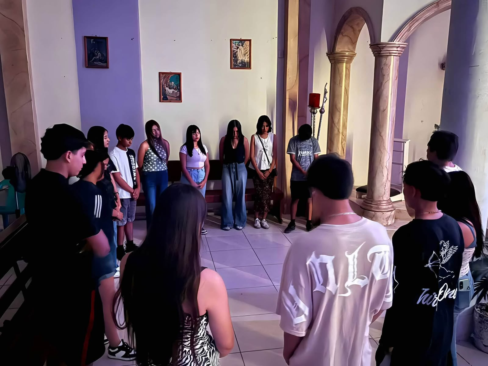
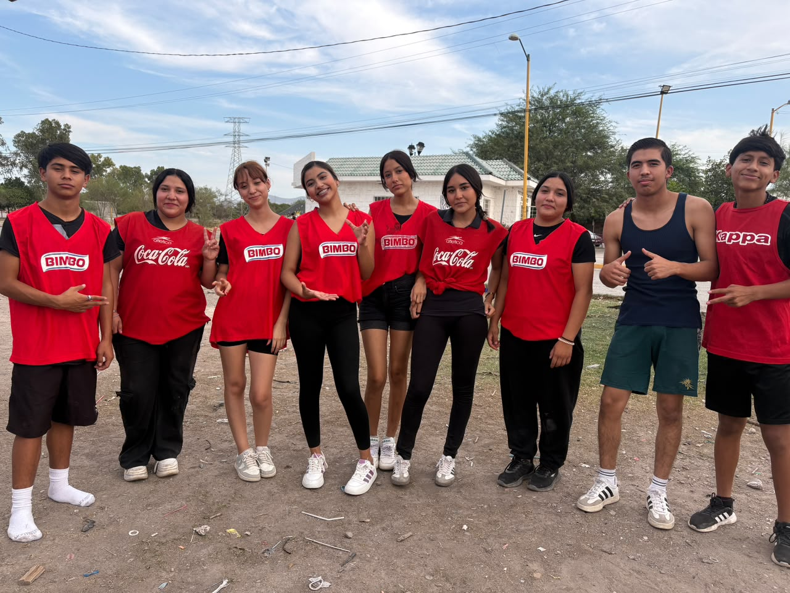
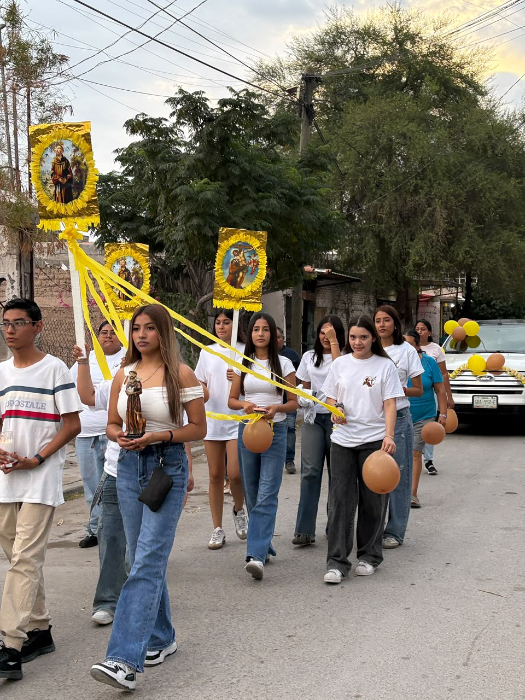

¿Qué hacemos?
Cada encuentro es una oportunidad para aprender y acercarnos más a Dios.

Oración
Compartimos momentos de oración y reflexión.

Convivencias
Realizamos dinámicas y juegos para fortalecer la amistad.

Peregrinamos
Caminamos juntos con esperanza y amor, recorriendo y visitando las capillas y parroquias de nuestra localidad, llevando nuestra Fe a cada rincon.
Nuestros encuentros
Nos reunimos los miércoles a las 7:30 p. m. en la Capilla San Francisco de Asís.